Инструменты и приспособления
Покажи мне твой инструмент, и я скажу, что ты за мастер
Радиолюбительство — это не столько внутреннее влечение, пытливый интерес к радиотехнике и электронике. Это прежде всего — практическая деятельность, конструирование радиоустройств и электронных приборов. Чтобы собрать любое электронное устройство, кроме знаний радиотехники и электроники нужны определенные навыки работы и инструмент. Очень важно уметь правильно содержать инструмент, чтобы он был в постоянной готовности. Известно, что хорошие инструменты стоят дорого, но на них экономить не следует: более дорогие инструменты будут служить дольше и их легче поддерживать в работоспособном состоянии.
Радиолюбителю, собирающему электронный прибор, приходится выполнять много различных работ. Наибольший удельный вес приходится, конечно, на электромонтажные работы, затем на механические и налаживание аппаратуры. Столярные и малярные работы встречаются гораздо реже.
Минимальный набор:
- Паяльник на 25–40 Вт с медным жалом.
- Припой ПОС-61 диаметром 2–3 мм с сердцевиной из канифоли.
- Баночка твердой канифоли.
- Маленькие бокорезы.
- Пинцет и/или плоскогубцы с длинными тонкими губками.
- Канцелярский нож.
- Небольшая губка.
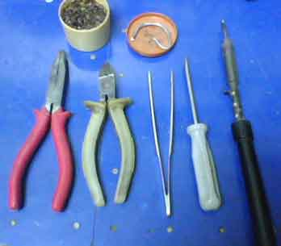
Рис. 1 - Минимальный набор инструментов
Основной набор:
- паяльник;
- универсальный измерительный прибор (ампервольтметр, мультиметр);
- комплект отверток разной длины и диаметром 2, 3, 4, 5 и 10 мм;
- кусачки и бокорезы;
- плоскогубцы (обыкновенные, «утиный нос», круглогубцы, комбинированные, пассатижи);
- пинцет (зажим)
- нож монтерский (канцелярский нож, скальпель);
- ножницы;
- ножовка по металлу с запасными полотнами и поворотными (на 90°) головками;
- лобзик;
- разметочный циркуль;
- напильники;
- надфили;
- молоток;
- кернер;
- шило
- дрель (ручная, гравер, мини-дрель)
- набор сверл;
- подставка под паяльник;
- тиски параллельные настольные (поворотные) и ручные тисочки;
- наковальня;
- струбцина;
- комплект гаечных ключей от 3 до 14 мм (в том числе торцевые);
- резак;
- отвертка из изоляционного материала для настройки контуров;
- крючок и прижимка;
- индикаторная палочка для настройки контуров;
- метчики 2; 2,6; 3; 3,5; 4; 5 мм с воротком;
- плашки 2; 2,6; 3; 3,5; 4; 5 мм;
- зубило, чертилка, пробойники диаметром 10; 12; 14; 18, 22; 30 мм),
- циркуль-измеритель;
- штангенциркуль,
- угольник стальной,
- метр металлический;
- шабер для зачистки жил кабелей и выводов радиодеталей и снятия заусенцев при механической обработке;
- набор абразивных шкурок по металлу и дереву;
- кисточка;
- оловоотсос;
- челнок;
- зеркальце.
Плоскогубцы
В комплекте инструмента обязательны также плоскогубцы, которые используют для изгибания проводов и выводов деталей при подготовке их к монтажу, во время монтажа и для многих других операций. В зависимости от формы губок плоскогубцы разных видов называют по-разному: узкогубцы, тонкогубцы, «утиный нос» и т. д. В комплекте инструмента желательно иметь набор разных их видов.
Плоскогубцами также пользуются для выпрямления одножильного монтажного провода путем вытягивания, для закрепления или демонтажа трансформаторов или дросселей, которые крепятся к шасси загибом или поворотом крепежных лапок. Для работ, требующих значительных механических усилий, используют пассатижи.
Во время монтажных работ часто бывают полезны круглогубцы, которые делают с короткими и длинными губками. Их используют для сгибания проводов, а также для того, чтобы делать колечки на конце провода при креплении проводов под зажимы, винты и т. п.
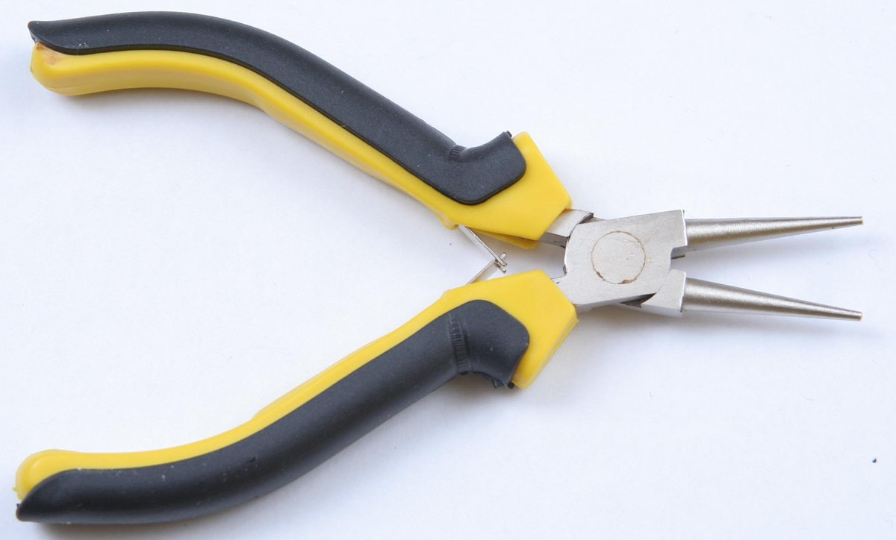
Рис. 3 - Круглогубцы
Существуют также очень удобные комбинированные инструменты. Так, комбинированными плоскогубцами можно не только захватывать и зажимать разные предметы, но также откусывать проволоку. Комбинированные плоскогубцы — неотъемлемая часть набора инструментов для монтажных работ. Такие комбинированные плоскогубцы иногда неправильно называют пассатижами. Пассатижи в отличие от комбинированных плоскогубцев имеют специальную форму губок с поперечной насечкой.
Острогубцы полезны при пайке планарных радиодеталей для удерживания их на месте во время пайки. В остальном применяются аналогично пинцетам, но могут обеспечить при необходимости большее сжимающее усилие, чем пинцет. Могут применяться вместо утконосов, и выполнять большую часть его функций.
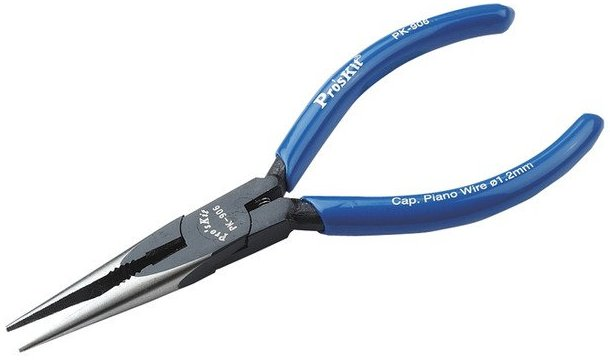
Рис. 3 - Острогубцы
Прямые утконосы необходимы для придания нужной формы выводам радиодеталей. Могут использоваться как бокорезы, для откусывания одножильных проводов. Многожильные провода кусать ими неудобно. Также, при сборке устройства в корпусе, ими удобно придерживать гайки при закручивании.
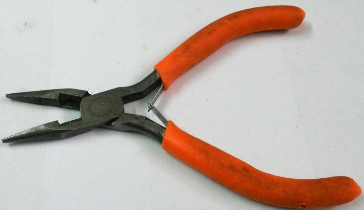
Рис. 4 - Прямые утконосы
Мини-пассатижи применяются аналогично большим пассатижам. То есть тогда, когда нам требуется применить усилие для загибания чего либо, например жести, либо придания нужной формы, например толстым проводам. В ряде случаев могут заменить утконосы, и благодаря режущей кромке позволяют откусывать провода.
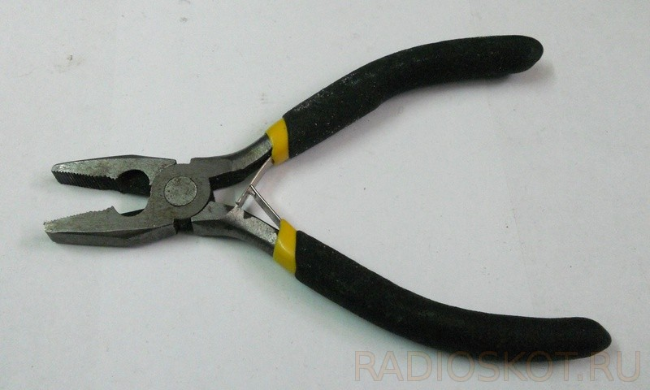
Рис. 5 - Мини пассатижи
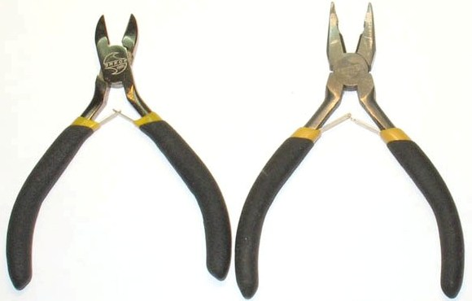
Рис. 6 - Маленькие бокорезы и плоскогубцы серии «точная механика»
Бокорезы
Кусачки-бокорезы применяют для откусывания излишне длинных монтажных проводов и выводов радиодеталей, для откусывания хлопчатобумажных, шелковых или синтетических ниток, которыми обмотаны монтажные провода под полихлорвиниловой оболочкой. Режущие кромки бокорезов должны быть острыми и плотно сходиться. Во избежание притупления режущих кромок бокорезами нельзя откусывать стальные провода или пытаться использовать их при отворачивании тугих винтов. Для откусывания стальных проводов и медного провода диаметром более 1,5 мм используется специальный пропил на боковой поверхности бокорезов или пассатижей.
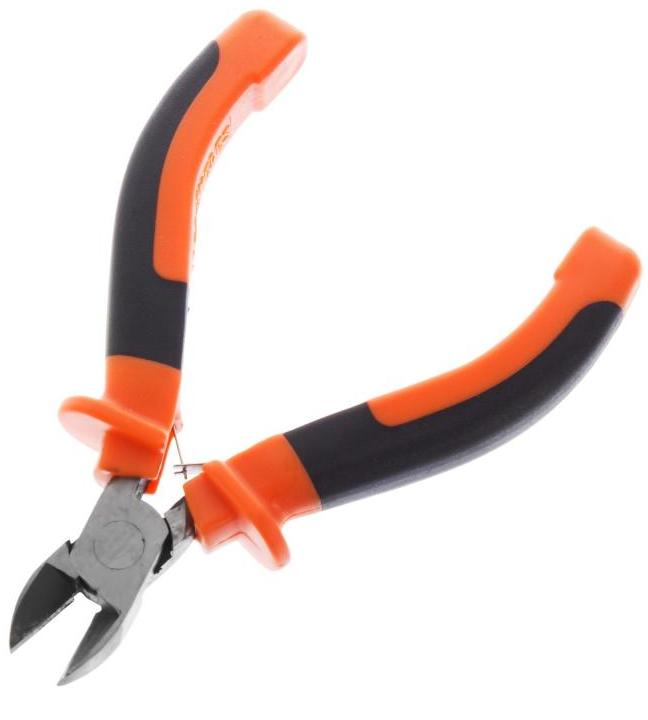
Рис. 7 - Бокорезы
Резак из ножовочного полотна
С его помощью можно изготовить плату без травления, отделяя дорожки не соединенные между собой бороздкой, прорезаемой в фольге текстолита. Такой способ доступен, если конечно плата достаточно простая. Также при ремонте, либо внесении изменений в схему устройства, иногда требуется перерезать дорожки на печатной плате. Для этой цели также пользуются резаком.
Изготавливают резак из ножовочного полотна с заточенным в виде крючка острым концом (рис. 8). Другой конец резака обматывают толстым слоем проволки и изоляционной ленты.
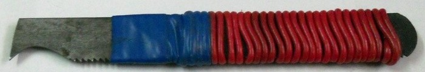
Рис. 8 - Резак из ножовочного полотна
Пинцеты
Широко используется при монтажных работах медицинский пинцет длиной 150 мм. Им удерживают радиодетали в процессе их припаивания или выпаивания. Придерживают монтажные провода во время пайки, рихтуют монтаж (для выравнивания и обеспечения нужного расстояния между деталями) после пайки. Для доступа к деталям, расположенным в глубине монтажа, полезно также иметь медицинский пинцет длиной 250 мм.
Как всем известно, те же резисторы при пайке сильно нагреваются, и если их держать руками, можно обжечься. При монтаже транзисторных устройств, где перегрев при пайке особенно опасен, пинцет и зажим могут выполнять функции теплоотвода.
На рабочей части губок бытовых пинцетов есть насечки, в отличие от китайских пинцетов, и пользоваться ими намного удобнее. Китайские пинцеты с виду ненадежные, не имеют насечек на рабочей части губок. Тем не менее, пинцетом, который загнут, удобно придерживать SMD детали во время пайки на плате.
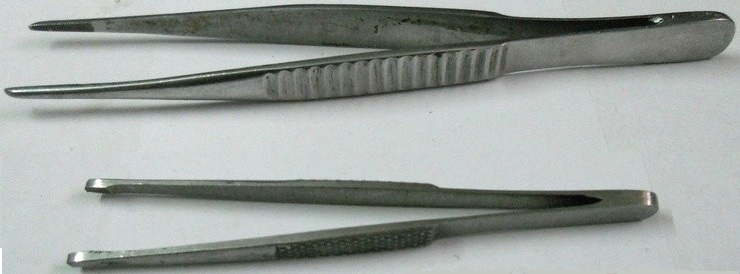
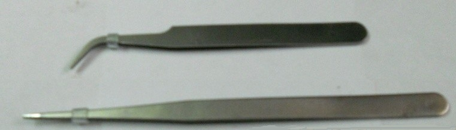
Рис. 9 - Пинцеты
Иногда может принести пользу хирургический зажим, представляющий собой пинцет с фиксацией, внешний вид которого показан на рис. 10.
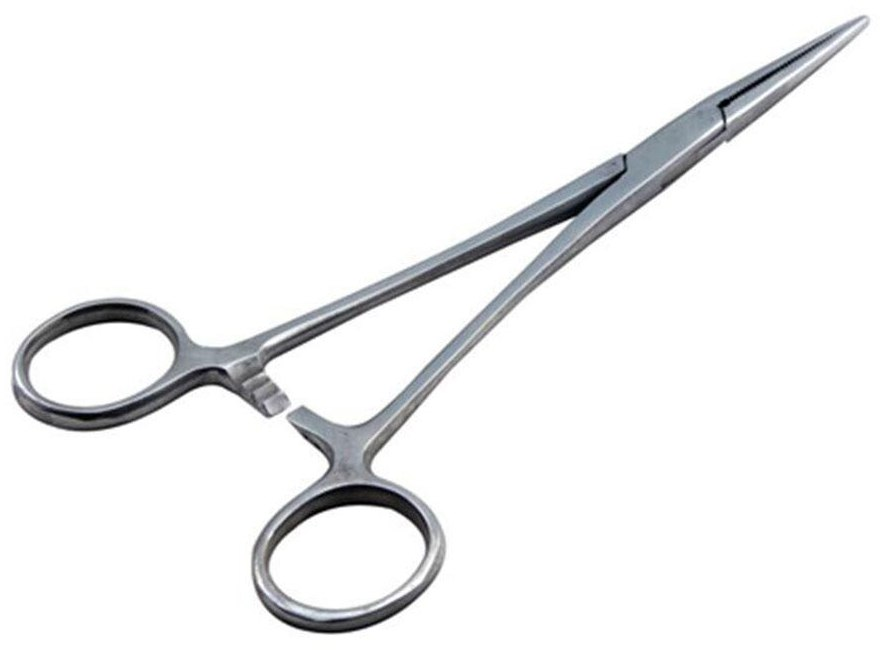
Рис. 10 - Хирургический зажим
Конструкция зажима имеет зубья и выступы. При сдвинутых губках зубья заскакивают за выступы и надежно держит зажатую губками деталь без приложения дальнейших усилий.
Термоклеевой пистолет
Незаменимая вещь при сборке устройства в корпусе. Например, нам нужно вывести на переднюю панель индикацию на светодиодах. Если выключатели и переменные резисторы имеют крепление на корпус, и закрепить их не составит труда, со светодиодами все сложнее. Нужно, чтобы в процессе эксплуатации устройства, если мы случайно надавим на светодиод, он не утапливался в корпус, что непременно произойдет, даже если мы вставим светодиод в отверстие “с натягом”. А так мы включаем пистолет в сеть, ждем 5 минут, капелька расплавленного клея, которая при остывании крепко зафиксирует светодиод, и готово.
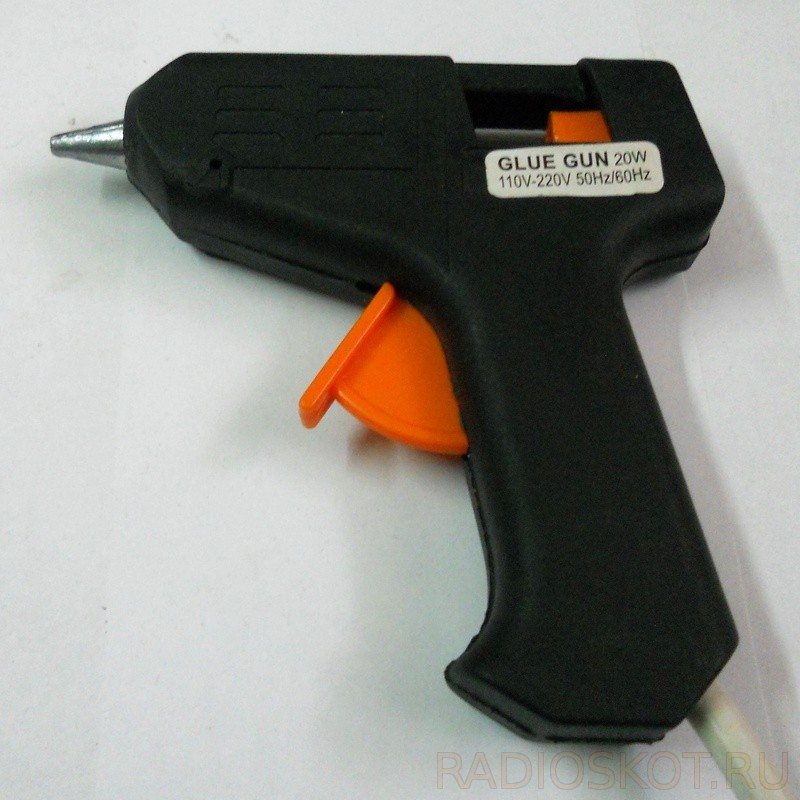
Рис. 11 - Термоклеевой пистолет
Напильники и надфили
При сборке устройства в корпусе, часто приходится расширять просверленные отверстия, подгонять их под нужные нам размеры. Для этого я пользуюсь разными надфилями и маленькими напильниками. Самые ходовые это плоские, применяются, когда требуется выпилить отверстие под выключатель или кнопку, и круглые, при подгонке отверстий, например под вал переменного резистора, и под те же светодиоды.
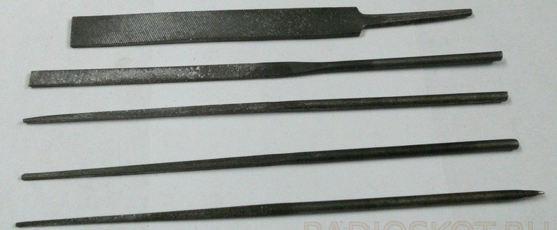
Рис. 12 - Набор надфилей и напильник (сверху)
Напильники различают по размерам, форме и типу насечки. Так, по типу насечки напильники бывают: драчовые — с крупной насечкой, личные — с более мелкой насечкой и бархатные — для самой тонкой обработки. В наборе инструментов рекомендуется иметь несколько напильников. Выбор напильников для работы зависит от величины и формы опиливаемой поверхности, толщины снимаемого слоя и от необходимой точности обработки. Для предварительной грубой опиловки после рубки или распиловки материала, когда требуется снять довольно толстый слой металла, следует пользоваться драчовыми напильниками, для более точной чистовой обработки и снятия заусениц — личными. Напильники бархатные применяют для окончательной подгонки деталей и самой точной обработки поверхности. Особо тонкие и точные работы — обработка фасонных отверстий и изготовление мелких деталей — выполняют маленькими напильниками с очень мелкой насечкой — надфилями. Личные и бархатные напильники не рекомендуется применять для обработки цветных металлов, так как насечка быстро забивается опилками.
Насечки у напильников бывают одинарные и перекрестные (двойные). Для твердых металлов более пригодна перекрестная насечка, для мягких — одинарная. Особый класс напильников образуют рашпили, у которых насечка представляет большие короткие зубцы в виде пирамидок, расставленных в шахматном порядке. Они используются для грубой опиловки вязких металлов и сплавов (таких, например, как алюминий и его сплавы, медь, латунь и т. д.), а также дерева. Существуют также напильники с фрезерованными зубьями, пригодные для обработки дерева, мягких цветных металлов и их сплавов, а также мягких сортов стали.
Для удобства работы на хвостовики напильников насаживают деревянные ручки. Лучшие деревянные ручки для инструмента — из сухой древесины бука, клена, березы и ясеня. Чтобы предотвратить появление мозолей или водяных пузырей на руках, рекомендуется слегка обжечь ручки на огне (до потемнения). Эта рекомендация относится и к другим инструментам с деревянными ручками.
Как и всякий другой инструмент, напильники нуждаются в хорошем уходе. Их нужно оберегать от ударов о металлические предметы, а также предохранять от попадания влаги и масла, так как в первом случае они покрываются ржавчиной, а во втором — скользят по обрабатываемой поверхности. Во время работы напильник следует периодически очищать от опилок стальной щеткой или самодельной кисточкой из тонкой стальной проволоки. Напильник с личной и бархатной насечкой можно чистить жестяной пластинкой толщиной 1 — 1,5 мм, сточив конец ее так, чтобы образовалась острая грань. Напильники, которые плохо поддаются чистке стальной щеткой, следует предварительно промыть керосином или раствором едкого натра (каустической соды).
По окончании работы напильники следует убирать, предварительно вычистив. Их нельзя бросать и класть друг на друга. Чтобы продлить срок службы, новые напильники рекомендуется применять сначала для опиловки только мягких металлов - латуни, меди, алюминия, более старые — для стали, а самые старые — для чугуна.
Если напильники, которыми часто пользуются, хранятся в ящике, то предотвратить появление на них ржавчины можно довольно просто. Для этого в ящик, где они находятся, следует поместить в полиэтиленовом или ином небьющемся и неразъедаемом известью сосуде кусок негашеной извести, поглощающей влагу.
Конический алюминиевый пруток
Полезная вещь, когда нужно прочистить отверстие под вывод радиодетали в печатной плате, залитое припоем. Из-за того, что пруток выполнен из алюминия, припой во время пайки к нему не прилипает. Для таких целей можно использовать зубочистки. Плюс этого прутка в том, что он конический, его можно вставить в отверстие, даже с обратной стороны платы, и прогревая расширить отверстие и освободить от припоя. Но будьте внимательны, не оторвите контакты с печатной платы при этом.
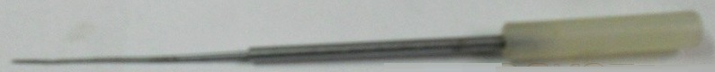
Рис. 13 - Конический алюминиевый пруток
Монтерский нож
Монтерские ножи используются в разрезании кабельно-проводниковых изделий, с их помощью осуществляется зачистка первичной изоляции, а также полное снятие изоляционного покрытия с токопроводящих жил.
Важно требование, предъявляемое к любой модели ножа – наличие диэлектрической рукоятки, которая обеспечивает безопасность работы с электричеством. Также на изделии должен указываться номинальный показатель напряжения, который способна выдержать изоляция. Есть модели ножей, у которых отсутствует изолированная ручка. Такие инструменты возможно применять лишь на обесточенных линиях.
При проведении электромонтажных работ желательно избегать использования длинных острых ножей, которыми легко можно повредить кабельно-проводниковые изделия. Мелкую работу удобнее и безопаснее осуществлять с использованием именно монтерских ножей, лезвие которых короткое и специально заточенное, что удобно при тесных условиях.
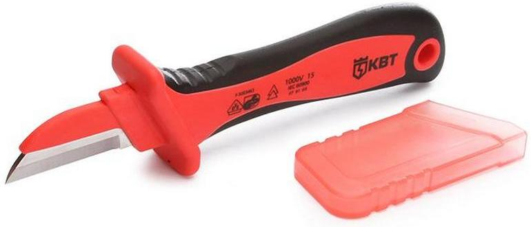
Рис. 14 - Монтерский нож
Скальпели
Помимо того, что ими можно прорезать, что-либо с усилием, можно подчистить остатки бумаги при переносе рисунка ЛУТом, с близко расположенных дорожек, чтобы они не слились при травлении.
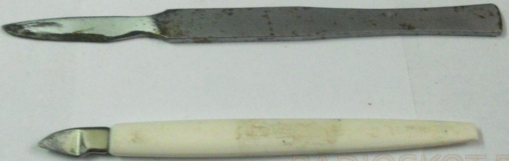
Рис. 15 - Скальпели
Канцелярский нож
Очень удобен при зачистке проводов от изоляции.
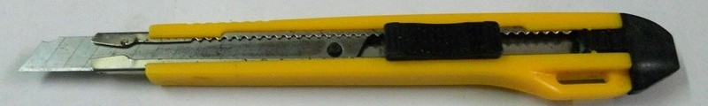
Рис. 16 - Канцелярский нож
Оловоотсос
При демонтаже (особенно при работе не обгорающими жалами) бывает необходимо удалить припой. Удаляют припой оловоотсосом или оплеткой. Оловоотсос позволяет демонтировать многовыводные детали без риска оторвать контакт на дорожке. С его помощью легко выпаиваются трансформаторы, микросхемы в DIP-корпусе и не только, любые разъемы.
Оловоотсос представляет себя что то вроде шприца с пружиной. Сначала он взводится – поршень толкается внутрь и защелкивается. Затем носик подносят к расплавленному припою, который необходимо удалить, и нажимают на кнопку спуска. Поршень под воздействием пружины поднимается, интенсивно затягивая воздух с припоем внутрь. При следующем взводе шток выдавит через носик собранный припой. На всякий случай передняя часть оловоотсоса съемная.
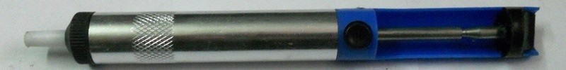
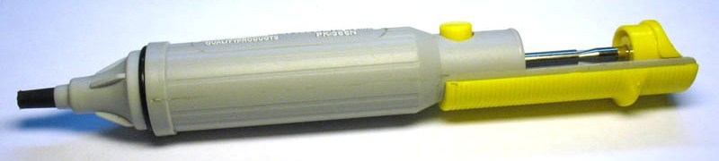
Рис. 16 - Оловоотсосы
Пользуются им следующим образом, подносят к месту пайки, взводят пружину, расплавляют припой паяльником и нажимают кнопку спуска на оловоотсосе. За счет создания разряженной области воздуха возле контакта, припой всасывается внутрь оловоотсоса. Если удалилось не полностью, взводим пружину и повторяем до тех пор, пока не очистим контакт от припоя полностью. Периодически разбираем и чистим от крупинок припоя резиновое кольцо на поршне.
Челнок
Служит для намотки трансформаторов на тороидальном (кольцевом) сердечнике. Сначала подсчитываем общую длину провода обмотки и наматываем её на челнок. После продеваем челнок в сердечник и начинаем наматывать. Такой способ позволяет мотать трансформаторы куда быстрее, чем, если бы мы продевали каждый раз руками провод в сердечник. Ширина челнока должна быть меньше диаметра сердечника вместе с намотанной обмоткой.
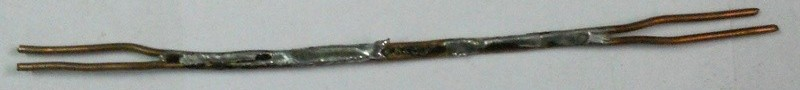
Рис. 17 - Челнок для намотки трансформаторов
Тисы
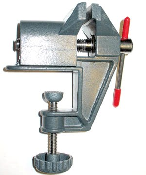
Рис. 18 - Тисы
Струбцина
Струбцина — один из видов вспомогательных инструментов, используемый для фиксации каких-либо деталей в момент обработки либо для плотного прижатия их друг к другу, например, при обработке напильником , либо сверлении либо склеивании. Струбцины обычно изготавливаются из металла либо древесины.
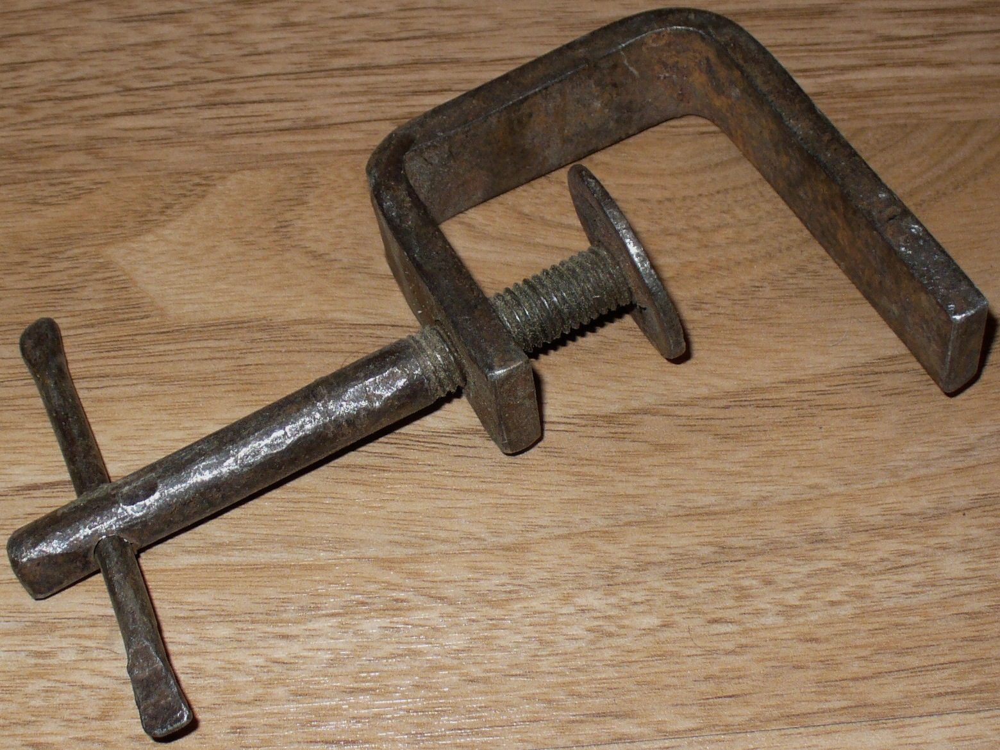
Рис. 19 - Струбцина металлическая
Приспособление «третья рука»
Позволяет освободить одну руку (например в третью руку зажать провод, в то время как левой держать проволочку припоя, а в правой руке паяльник.)
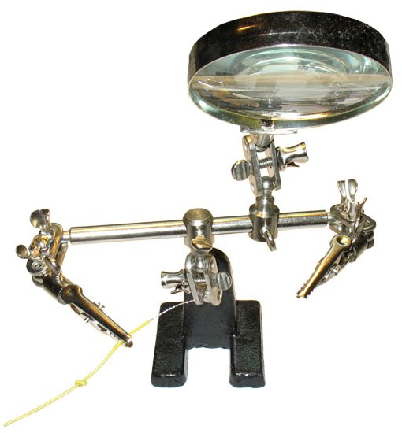
Рис. 19 - Приспособление «третья рука»
Набор полых игл для выпаивания
Иглы выполнены из нержавейки и припой к ним не прилипает во время пайки. Диаметр игл позволяет выпаивать выводы, например от 0,8 мм, что подходит для выпаивания микросхем в DIP корпусе, до 2 мм, что позволит выпаять при необходимости даже трансформатор из платы. Также в набор входит шило, которым удобно разъединять контакты микросхемы в Dip корпусе, если при пайке они случайно “слипнутся”. Для этого прогреваем слипшиеся контакты и проводим шилом между ними, таким образом разъединяя их.
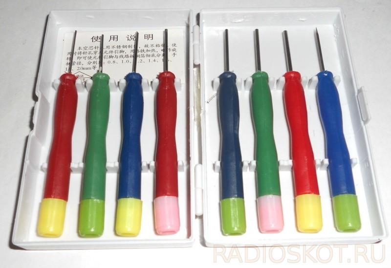
Рис. 20 - Набор игл для выпаивания
Ножницы
Обычные хозяйственные ножницы с длиной режущих кромок 70 мм используются для резки изоленты, бумаги и лакоткани при намотке трансформаторов или дросселей, для изготовления разных прокладок из бумаги, прессшпана, лакоткани, полиэтиленовой пленки.
Для резки тонкого гетинакса или текстолита, тонкой листовой меди или латуни, а также алюминия или жести удобно использовать хирургические ножницы с длиной режущих кромок 30 мм.
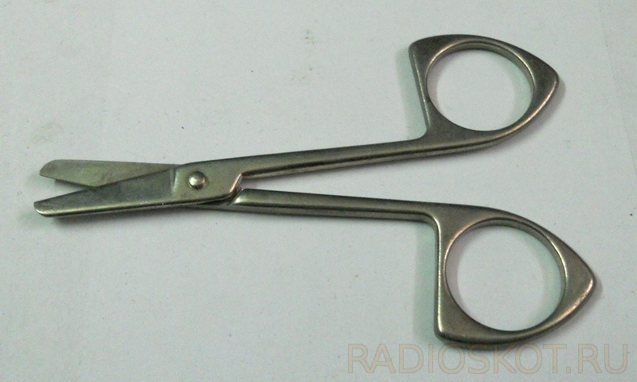
Рис. 21 - Маленькие ножницы
Демонтажная оплетка
Для более чистого сбора припоя используют оплетку. Оплетка представляет из себя множество тонких переплетенных медных проволочек, покрытых флюсом.
Применяется следующим образом: обмакиваем кусочек оплетки в спирто-канифольный флюс, кладем на контакт сверху и прогреваем жалом паяльника так, чтобы весь припой с контакта впитался в оплетку. Припой под действием капиллярных сил всасывается в оплетку. Использованную часть оплетки отрезают и выбрасывают. Также использованный кусок можно применить для лужения дорожек.
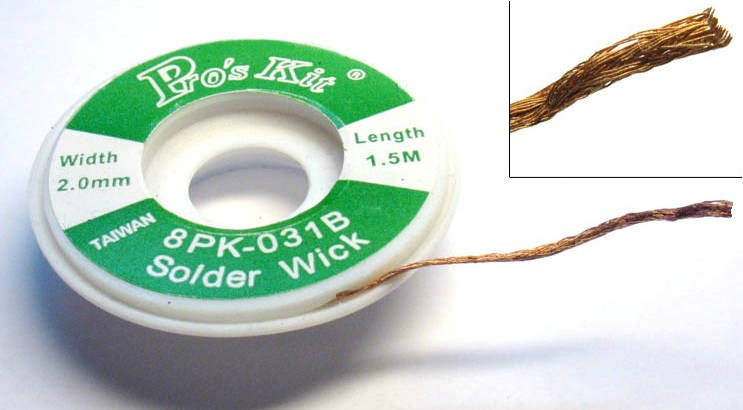
Рис. 23 - Демонтажная оплетка
Кисточка для нанесения флюса
Используется при лужении плат паяльником. С помощью кисточки наносится жидкий спирто-канифольный флюс на дорожки. После набираем на оплетку немного припоя, и прогревая паяльником водим по оплеткой по дорожкам. В результате, таким способом получается залудить дорожки. Припоя следует брать на оплетку совсем немного.
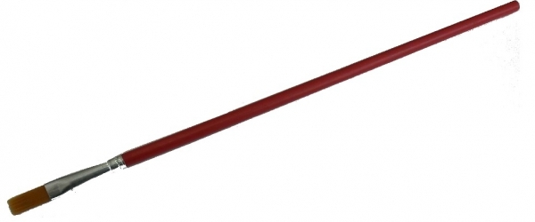
Рис. 24 - Кисточка для нанесения флюса
Шило
Помимо того, что ими можно размечать размеры платы, при отпиливании на куске текстолита, пользуюсь шилом для того чтобы слегка накернить отверстия перед сверлением в плате, под выводы деталей.
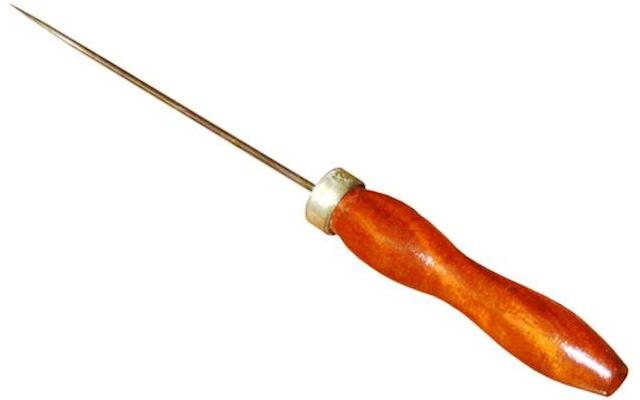
Рис. 25 - Шило
Сверла
Существует мнение, что набор сверл должен состоять из ряда сверл с интервалами размером в 0,1 мм. В этом случае потребовалось бы иметь в наборе 55 сверл. Как показала практика, можно обойтись значительно меньшим набором сверл. Для сверления отверстий, в которые будут проходить стержни со скользящей посадкой, нужно иметь сверла диаметрами 1, 2, 3, 4, 5 и 6 мм. Обычно применяются винты с резьбой М2; М2,5; МЗ; М4 и М5. Чтобы для них сверлить отверстия «на проход», нужны сверла диаметрами соответственно 2,2; 3; 3,3; 4,2 и 5,5 мм.
Для отверстий под резьбу для винтов от М2 до М5 необходимы сверла диаметром 1,6; 2,2; 2,5; 3,3 и 4 мм. Таким образом, требуется набор из 15 сверл диаметрами 0,6; 0,8; 1; 1,2; 1,6; 2; 2,2; 2,5; 3; 3,3; 4; 4,2; 5; 5,5 и 6 мм. В этом наборе диаметр некоторых сверл «под резьбу» не точно соответствует расчетному, но это несоответствие столь незначительно, что им можно пренебречь.
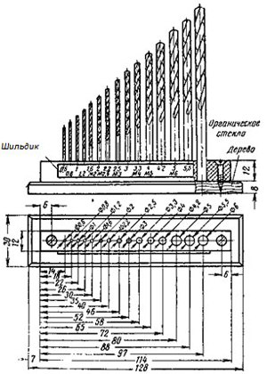
Рис. 26 - Колодка для сверл
Для хранения наборов сверл, метчиков, разверток и бородков применяют колодки из дерева, пластмассы и другой разнообразной конструкции (рис. 26, 27).
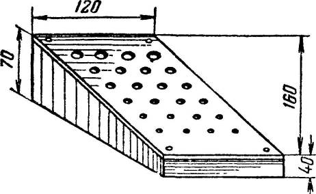
Рис. 27 - Колодка для хранения сверл и разверток.
Простая и удобная конструкция колодки показана на рис. 27. Чтобы можно было быстро найти нужное сверло, их располагают в следующем порядке: сверла с диаметрами, равными целому числу, т. е. 1, 2, 3, 4 и т. д., по вертикали в первом ряду слева, а по горизонтали от первого ряда с десятичными долями — 1,1; 1,2; 1,3; 1,4 и т. д.
{kind=link}
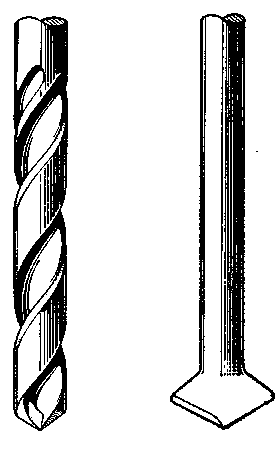
Рис. 28 - Сверла: спиральное (слева) и перовое
Сверление малых отверстий производят с помощью дрели и сверл разного диаметра (рис. 28, слева).
При отсутствии спиральных сверл нужного диаметра или длины для сверления древесины можно употреблять сверла перовые (рис. 28, справа). Их изготавливают из прутка углеродистой инструментальной стали. Для этого пруток нагревают и расплющивают на одном конце в виде лопатки. Затем расплющенный конец закаливают и затачивают на наждачном круге так, чтобы при вершине сверла образовалась режущая кромка. Угол заточки сверла зависит от материала, для которого предназначается сверло (в пределах 90 — 120°).
Иногда возникает необходимость просверлить отверстие в труднодоступном месте. Если есть опасность повредить сверлом близко расположенные детали, то на сверло рекомендуется надевать трубку из резины, хлорринила или другого подобного материала. Длина трубки должна быть меньше длины вставленного в дрель сверла настолько, чтобы из трубки высовывался лишь конец сверла. Трубка одновременно служит надежным ограничителем глубины сверления. Она может также предохранить от случайного повреждения детали, находящейся на другой стороне просверленной поверхности.
Сверло во время работы нагревается, и перегрев его может привести к тому, что оно очень быстро выйдет из строя. Поэтому при сверлении отверстий, особенно если для этих целей используется электродрель и сверло сильно нагревается, нужно применять охлаждающие средства, одновременно служащие и для смазки места сверления. При сверлении твердой стали используют скипидар или смесь из мыльной воды и льняного вареного масла, для красной меди — вареное масло, для мягкой стали — вареное масло, мыльную воду или слабый раствор соды, для мягких металлов, например алюминия, — керосин. Небольшие отверстия в латуни можно сверлить без охлаждения. При сверлении чугуна и бронзы применять эмульсии вообще не рекомендуется, так как мелкие опилки этих металлов, оказавшись в эмульсии, способствуют еще большему нагреванию и износу сверла.
Абразивы
В домашней мастерской рекомендуется иметь абразивы: бруски и точильные круги для заточки инструмента, шлифовальные шкурки, полировочные пасты и т. д. Они используются для самых разнообразных целей. Абразивные материалы по величине (крупности) зерен разделяются (ГОСТ 3647 — 71) на четыре группы (табл. 1).
Таблица 1
| Группа материала | Номер зернистости |
|---|---|
| Шлифзерно | 200, 160, 125, 100, 80, 63, 50, 40, 32, 25, 20, 16 |
| Шлифпорошки | 12, 10, 8, 6, 5, 4, 3 |
| Микропорошки | М63, М50, М40, М28, М20, М14 |
| Тонкие микропорошки | М10, М7, М5 |
Существует также стандарт на величину (крупность) зерен основной фракции абразивных материалов (ГОСТ 3647-71). Размер зерна (в мкм) примерно равен номеру зернистости, умноженному на десять. Буква М соответствует порошкам, получаемым способом гидроклассификации.
Для шлифовальный шкурок используются материалы, которым присвоены соответствующие марки (ГОСТ 5009-75; ГОСТ 6456 — 75 с изменениями; ГОСТ 10054 — 75 с изменениями; ГОСТ 13344 — 67) (табл. 2).
Таблица 2
| Вид абразивного материала | Марка абразивного материала |
|---|---|
| Электрокорунд нормальный | 16А, 15А, НА, 13А |
| белый | 25А, 24А, 23А |
| легированный | 37А, 35А, 34 А, ЗЗА |
| циркониевый | 38Д |
| Монокорунд | 45А, 44А, 43А |
| Карбид кремния зеленый | 64С, 63 |
| черный | 55С, 54С, 53С |
| Кремень | 81 Кр |
Все эти данные: зернистость материала, его вид, марка и т. д. — входят как составные части в обозначения шкурок.
Основой шлифовальных шкурок может быть либо бумага, либо ткань, связкой — мездровый (столярный) клей, синтетическая, связка и комбинированная связка. В зависимости от этого шлифовальные шкурки могут быть водостойкими или неводостойкими.
Можно встретить также деление шлифовальных шкурок по номерам (от 00 до 7 и выше). Номер этот определяется по времени оседания зерен абразивного материала из водной взвеси. Таким образом, чем больше номер шкурки, тем, следовательно, мельче должны быть зерна материала.
Для обработки дерева, пластмасс и мягких металлов применяют стеклянную шкурку, а для твердых металлических сплавов — корунд (глинозем, окись алюминия), электрокорунд (искусственный корунд, получаемый в электропечах), карборунд (карбид кремния), наждак (смесь корунда с кварцем, пиритом, магнетитом и др.). Чем крупнее зерна абразива, тем грубее получается обработанная поверхность. Сорт шлифовальной шкурки можно определить по цвету абразивного материала: стекло — прозрачно, наждак имеет черный или темно-серый цвет, карборунд — разные оттенки зеленого цвета.
Отвертки
Отвертки для электромонтажных работ должны иметь длинную ручку из изоляционного материала (дерева, эбонита, пластмассы и т. д.), чтобы предотвратить опасность случайного поражения электрическим током.
Набор отверток с разной длиной лезвия и шириной жала необходим для отворачивания винтов, имеющих шлицевые головки. Для мелких винтов удобны либо часовые отвертки, либо небольшие отвертки, входящие обычно в комплект готовален. Если аппарат находится под током, часовыми отвертками с металлической ручкой пользоваться ни в коем случае нельзя. Для отворачивания крупных винтов с резьбой М5, Мб понадобится отвертка с шириной жала 10-12 мм и толстым лезвием с ручкой диаметром 30-40 мм. Для отворачивания мелких винтов в глубине монтажа необходима отвертка с длинным лезвием порядка 250 мм и шириной жала 5-6 мм.
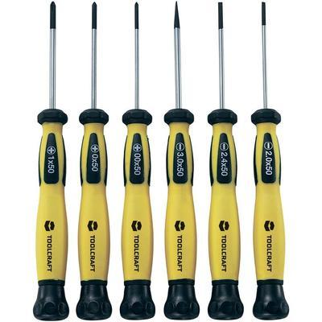
Рис. 29 - Набор отверток для электроники
Набор часовых отверток отлично подходит для разборки фотоаппаратов, mp3-плейеров, при ремонте, и любой другой техники с мелкими винтами. Есть как крестовые, так и плоские отвертки разных размеров, под разные головки винтов.
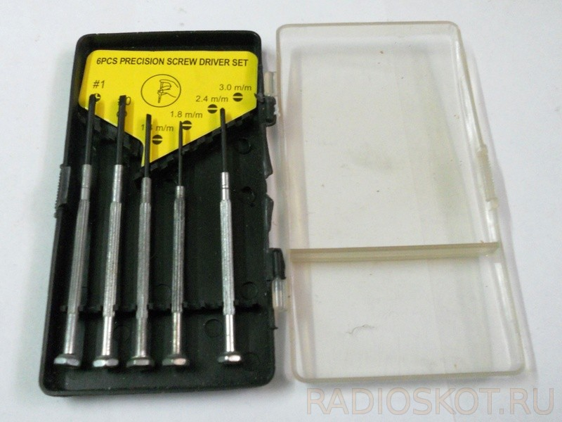
Рис. 30 - Набор часовых отверток
Для настройки контуров надо использовать специальный инструмент: отвертку из изоляционного материала, а также специальную индикаторную палочку, имеющую на одном конце кусочек феррита, а на другом — кусочек латуни или меди.
Для изготовления отвертки, используемой при настройке контуров, пригоден стержень из любого, поддающегося обработке изоляционного материала, в том числе и древесины. В таком стержне (в одном из торцов) делается пропил, в который вставляют и приклеивают клеем БФ-2 небольшую пластинку из латуни или бронзы, заточенную с одной стороны подобно отвертке.
В настоящее время широко применяются различные винты с головкой, имеющей крестообразный шлиц. Для таких винтов необходимо использовать специальные отвертки с крестообразным концом. Однако этим инструментом отвернуть винт часто оказывается трудно. Тогда вполне допустимо использовать обычную отвертку с соответствующей шириной жала.
Отвертки должны быть изготовлены из достаточно твердой, но не хрупкой стали. Жало отвертки должно быть тупым, а его толщина соответствовать ширине шлица в головке винта, чтобы жало входило в шлиц плотно, без зазора. Боковые поверхности жала отвертки по возможности должны быть параллельны: клинообразность жала не обеспечивает плотного его соединения со шлицом винта и приводит к срыванию шлица. Для отворачивания винтов с потайной головкой нужно пользоваться отверткой, ширина жала которой равна диаметру головки винта. Отвертки с погнутым или сколотым жалом использовать нельзя - они срывают шлицы, после чего отвернуть винт становится невозможно.
Чтобы отвернуть любую гайку, требуется набор гаечных ключей с размерами под ключ от 6 до 14 мм. Рабочие поверхности ключей должны быть параллельны во избежание срыва граней гайки. Отворачивать гайки плоскогубцами или пассатижами не рекомендуется, так как это часто приводит к их порче. Иногда удобнее пользоваться торцевыми гаечными ключами.
Часто во избежание самоотвертывания концы винтов, выступающие из гаек, закрашены краской. Для отворачивания таких соединений нужно предварительно прожечь краску паяльником. Это также помогает, когда винтовое соединение проржавело. После прогрева его паяльником полезно нанести на резьбу каплю керосина или машинного масла.
Молоток
Необходимо иметь в наличии по крайней мере два молотка: один массой 100 г для расклепывания заклепок, рихтовки металлических полос, накернивания металла под сверление отверстий, другой - массой 400 г для работы с зубилом, ковки жала отверток или паяльника перед их заточкой, накернивания металла перед сверлением больших отверстий.